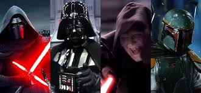

Personajes del lado oscuro
los personajes del lado oscuro en Star Wars son aquellos que se alinean con el mal, la tiranía y el poder sin límites. Estos individuos a menudo son usuarios del lado oscuro de la Fuerza y sirven a los Sith o al Imperio Galáctico en su búsqueda de dominación.
